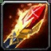
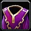

Objectives
Drag to move · scroll or pinch to zoom · M big map. Pins are approximate.

1Beginner's leveling guide · WoW: Forever
Do one step, then press Next Step. The guide remembers where you stopped. New to the game? Read How to Play first.
Drag to move · scroll or pinch to zoom · M big map. Pins are approximate.
Arrow keys ← → also work. Words with a dotted line, like , explain themselves when clicked. The Action Bars tab shows which buttons to have at each level.
Where every spell should go, level by level. The main bar has what you press in every fight, on keys you reach without looking. Rarer and emergency spells go on Shift + number. Things you only use between fights go on the right bar, to click with the mouse. Hover over or tap a button to see what it does.
The colour of an item's name tells you how good it is:

Better: it has Intellect, the stat mages want most. Put it on.
Addons are free extras that improve the game's interface. You don't need any, but a few make leveling much easier. The Addons page lists which ones to get (must-have, recommended, optional, and a separate list for dungeons) and how to install them.
Waypoint arrow: with the TomTom addon, click a pin on any Quest Guide map and press Copy /way. In game, press Enter, paste with Ctrl + V and press Enter again. An arrow points the way. /way reset all clears it.
| L | Quest log | M | Map |
| P | Spellbook | N | Talents |
| C | Your character | B | Bags |
| X | Sit down | Y | Legacy (from about level 25) |
From level 10 you get one talent point each level. This is your talent window (N in game), one point at a time: the glowing talent is the one to click at this level. Most points go into Frost, the last 7 into Arcane. Like the Gear tab, it follows your place in the Quest Guide; use Next, the slider or the arrow keys to look ahead. In the game, click Apply Changes after placing the point.
Made a mistake? Any mage trainer can reset your talents for a little gold.
Your character window (C in game), filled with the items this guide's quests give you. Like the Action Bars tab, it follows your place in the Quest Guide; move the level slider to look ahead or back. Your own window won't match exactly: dungeon drops, the auction house and lucky finds can beat these.
Fan-made guide for World of Warcraft: Forever. Spell icons and maps © Blizzard Entertainment. Icons from the game files; zone maps from Wowhead, Mount Hyjal from the game files.